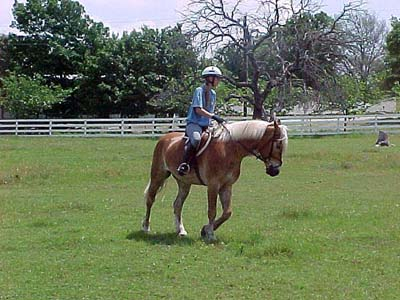
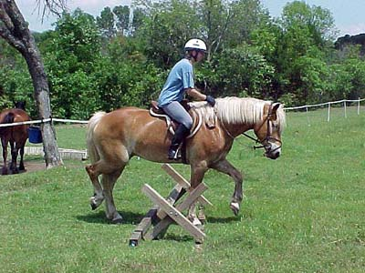
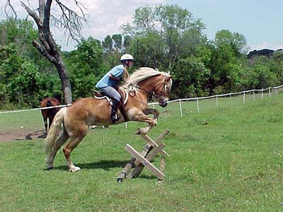
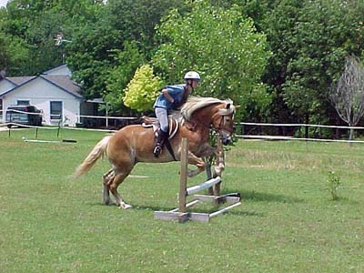

I'm not sure why, but I tend to crouch
more in my jumping saddle

The flies seemed pretty bad. I was
concerned that something I was doing was bothering him, because he kept
switching his tail. Then I glanced at the photographer and he kept swiping
at bugs so I figured it was just that.

See, I do know where my hands belong,
so please ignore them in the next pictures.

He didn't rush, he didn't hesitate,
he was just having fun. (and what a potential for bascule)

I think the jumping is going to be
a good break for Adamir from the dressage work. He seems to enjoy it more
than my fussing for flexing and lengthens...